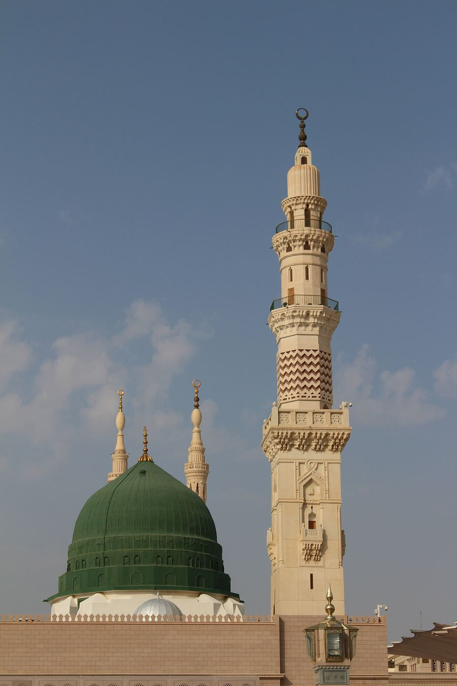

١. خطّاف افتتاحي
قبل أن يكون نبيًّا، كان خصومه أنفسهم يلقّبونه بلقب واحد لا يعرفون له سواه: «الصادق الأمين». كانوا يودعون عنده أموالهم وأسرارهم وهم على غير دينه. فماذا حدث حين جاء هؤلاء القومَ أنفسَهم بالرسالة؟ ولماذا انقلب الحال إلى عداوة ومطاردة وتشريد؟ قصة هذا الرجل لا تُروى من نهايتها؛ تُروى من أولها — وهذه الوحدة ترويها لك من مصادرها الموثقة، موقفًا موقفًا.
٢. خلاصة تنفيذية
محمد بن عبد الله ﷺ يتيم فقير نشأ في مكة، فعرفه قومه أربعين سنة بالصدق والأمانة قبل أن يدّعي شيئًا. وفي الأربعين جاءه الوحي، فقضى ثلاث عشرة سنة في مكة صابرًا على الأذى بلا سلطة ولا جيش، ثم هاجر فبنى في المدينة مجتمعًا ووثيقة عيش مشترك، وختم سيرته العملية بالعفو العام عن أهل مكة يوم قدر عليهم. يقدّم المسلمون لصدقه حزمة أدلة: سيرته قبل النبوة وبعدها، وطبيعة الكتاب الذي جاء به وهو أميّ، وعتاب القرآن له في مواضع لا يخلّدها مؤلّف في كتابه. وهو عند أتباعه بشر رسول يُحبّ ويُقتدى به ولا يُعبد؛ مات كما يموت البشر، وبقيت رسالته بعده.
٣. قبل أن تبدأ: متطلبات سابقة وموضعك في المسار
هذه الوحدة ٥ من ١٢. تفترض الوحدة الرابعة «الأنبياء والرسل» التي رسمت السلسلة كلها وخاتمتها؛ فهذه الوحدة تفتح ملف الخاتم نفسه. وهي قائمة بذاتها لمن وصل إليها مباشرة، لكن قراءتها بعد الرابعة تجعل سؤالها أدقّ: ليس «من محمد؟» فقط، بل «هل تصدق دعوى هذا الرجل أنه خاتم تلك السلسلة؟».
٤. أهداف الوحدة
بنهاية هذه الوحدة تستطيع أن: - تسرد محطات سيرة محمد ﷺ الكبرى قبل النبوة وبعدها بترتيبها الزمني. - تشرح أدلة الصدق التي يقدمها المسلمون كما يعرضها أصحابها. - تصف أخلاقه ﷺ في بيته وبين الناس من شهادات من عاشوا معه. - تفرّق بدقة بين مكانة النبي ﷺ عند المسلمين (بشر رسول يُقتدى به) وبين العبادة التي لا تكون إلا لله وحده.
٥. المتن

٥.١ من هو محمد؟ لمحة من حياته قبل الرسالة
وُلد محمد بن عبد الله في مكة نحو سنة ٥٧٠م، يتيم الأب، ثم فقد أمه وهو طفل صغير، فنشأ في كفالة جده ثم عمه أبي طالب. وقد لخّص القرآن نفسه هذه النشأة في خطاب مباشر له: ﴿أَلَمْ يَجِدْكَ يَتِيمًا فَآوَىٰ وَوَجَدَكَ ضَالًّا فَهَدَىٰ وَوَجَدَكَ عَائِلًا فَأَغْنَىٰ﴾ [الضحى: ٦–٨] — يتيمًا فآواه، وحائرًا باحثًا فهداه، وفقيرًا فأغناه بفضله. لم يكن من بيت ملك ولا ثراء، بل شبّ فقيرًا يرعى الغنم ثم يعمل في التجارة، حتى عرفته قريش كلها بلقب واحد لم يعرف به غيره في مجتمعه: «الصادق الأمين». هذه الشهادة مهمة جدًّا في ميزان التقييم العادل؛ فهي لم تصدر من أتباعه بعد نجاح دعوته، بل من قومه قبل النبوة، حين كانوا يودعون عنده أموالهم وأماناتهم وهم يعرفون أنه لا يكذب ولا يخون.
تزوج في الخامسة والعشرين من خديجة بنت خويلد رضي الله عنها، وكانت تاجرة ذات مال وشرف، فعاش معها خمسًا وعشرين سنة زوجًا وفيًّا لا يتزوج عليها، حتى توفيت وهي أحب الناس إليه. وكان ﷺ معروفًا في مجتمعه بصلة الرحم وحمل الكلّ وإكرام الضيف وإعانة المظلوم، بعيدًا عن عبادة الأصنام وعن مجالس اللهو والخمر التي كانت شائعة حوله؛ فقد عصمه الله من رجس الجاهلية منذ نشأته. وحين بلغ الأربعين، وهو يتعبد في غار حراء متأملًا في خلق السماوات والأرض، جاءه الوحي الأول بكلمة صارت عنوان رسالته كلها: ﴿اقْرَأْ بِاسْمِ رَبِّكَ الَّذِي خَلَقَ﴾ [العلق: ١].
المصادر: - القرآن الكريم: [العلق: ١]، [الضحى: ٦–٨]. - صفي الرحمن المباركفوري، «الرحيق المختوم» — أبواب النسب والمولد والنشأة وبعثته ﷺ. - موقع إسلام ويب (islamweb.net) — موسوعة السيرة النبوية.
٥.٢ ماذا حدث بعد الوحي؟ ثلاثة عشر عامًا من الصبر في مكة
لم يستقبل محمد ﷺ الرسالة بسلطة جاهزة ولا بجيش ولا بمال، بل بدعوة سرية ثم علنية في مدينة تعبد الأصنام وتقتات على مواسم الحج إليها. فكان الجزاء ثلاث عشرة سنة من السخرية والمقاطعة والتعذيب لأتباعه الأوائل، حتى أُخرج ﷺ من بلده الذي وُلد فيه، وهاجر إلى المدينة المنورة سنة ٦٢٢م — وهي السنة التي يبدأ بها التقويم الهجري. وهناك بنى أول مجتمع مسلم: مسجدًا يجمع الناس، ووثيقة مكتوبة تنظّم العيش المشترك بين المسلمين واليهود وقبائل المدينة على أساس المواطنة المشتركة والدفاع المشترك، في وثيقة يعدّها مؤرخون من أقدم نصوص تنظيم التعددية الدينية في مجتمع واحد.
ثم جاءت سنوات المواجهة مع قريش التي أرادت إطفاء الدعوة بالقوة، فكانت الحروب دفاعًا عن مجتمع ناشئ محاصَر في أغلبها، وانتهت بصلح الحديبية، ثم بفتح مكة في السنة الثامنة للهجرة فتحًا كادت تنعدم فيه الدماء: دخل النبي ﷺ المدينة التي آذته وشرّدته، فقال لقومها ما قال يوسف عليه السلام لإخوته من قبل: ﴿قَالَ لَا تَثْرِيبَ عَلَيْكُمُ الْيَوْمَ ۖ يَغْفِرُ اللَّهُ لَكُمْ ۖ وَهُوَ أَرْحَمُ الرَّاحِمِينَ﴾ [يوسف: ٩٢]، وأعلن عفوًا عامًّا عنهم. هذا الموقف وحده — العفو عند المقدرة الكاملة — من أقوى ما يقدّمه المسلمون شاهدًا عمليًّا على طبيعة الرجل ورسالته: ﴿وَمَا أَرْسَلْنَاكَ إِلَّا رَحْمَةً لِّلْعَالَمِينَ﴾ [الأنبياء: ١٠٧].
المصادر: - القرآن الكريم: [الأنبياء: ١٠٧]، [يوسف: ٩٢]. - «الرحيق المختوم» — أبواب الدعوة المكية والهجرة ووثيقة المدينة وفتح مكة. - صحيح البخاري — كتاب المغازي (أبواب صلح الحديبية وفتح مكة)، عبر الدرر السنية للتحقق. - محمد حسين هيكل، «حياة محمد» — للعرض التاريخي الميسّر لمراحل الدعوة.
٥.٣ ما أدلّة صدقه التي يقدّمها المسلمون؟
سؤال مشروع لا يحرجنا: لماذا يصدّق المسلمون أن محمدًا ﷺ رسول من عند الله، لا رجل صالح اخترع رسالة؟ يقدّم المسلمون حزمة أدلة متراكبة، لا دليلًا واحدًا، أهمها باختصار:
أولًا: سيرته قبل النبوة وبعدها؛ فالكذب على الله أكبر كذب ممكن، ويستحيل عقلًا وعادة أن يعيش رجل أربعين سنة مشهودًا له بالصدق المطلق، ثم يخترع فجأة كذبة يعيش لها ثلاثًا وعشرين سنة من المشقة والاضطهاد وهو قادر في كل لحظة على المساومة والغنى. ثانيًا: طبيعة الرسالة نفسها؛ فقد جاء رجل أميّ لا يقرأ ولا يكتب بكتاب عجز بلغاء عصره عن معارضته، يحمل تشريعًا وأخلاقًا وأخبارًا وتصورًا كاملًا للحياة، وبقي هذا الكتاب محفوظًا حرفًا بحرف أربعة عشر قرنًا. وقد نصّ القرآن نفسه على هذه الأميّة وجعلها جزءًا من الدليل: ﴿وَمَا كُنتَ تَتْلُو مِن قَبْلِهِ مِن كِتَابٍ وَلَا تَخُطُّهُ بِيَمِينِكَ ۖ إِذًا لَّارْتَابَ الْمُبْطِلُونَ﴾ [العنكبوت: ٤٨] — لو كنت قارئًا كاتبًا قبل الوحي لكان للمرتابين مدخل؛ أما وأنت لا تقرأ ولا تكتب، فمن أين جاء هذا الكتاب؟ ثالثًا: أمانته مع ما لا ينفعه؛ ففي القرآن عتاب صريح للنبي ﷺ في مواقف بعينها — كإعراضه عن الأعمى المتعلم وانشغاله بكبار القوم [عبس: ١–١٠] — ولو كان هو مؤلف الكتاب لما خلّد فيه عتاب نفسه. رابعًا: تحقق ما أخبر به من أمور مستقبلية في حياته وبعدها كما ترويه كتب السيرة الموثقة، وعلى رأسها وعد الروم بالغلبة بعد هزيمتهم في بضع سنين [الروم: ٢–٤].
نعرض هذه الأدلة كما يعرضها أصحابها، ونترك لك وزنها؛ فمنهجنا في هذا المسار كله أن نقدّم الدعوى ودليلها، وأنت صاحب الحكم.
المصادر: - القرآن الكريم: [عبس: ١–١٠]، [الروم: ٢–٤]، [العنكبوت: ٤٨]. - «الرحيق المختوم» — أبواب دلائل النبوة وحياته ﷺ قبل البعثة. - موقع الإسلام سؤال وجواب (islamqa.info) — أجوبة «ما دليل صدق محمد ﷺ؟» للباحثين.
٥.٤ محمد في بيته وبين الناس: الأخلاق التي رآها من عاش معه
أصدق صورة للرجل لا تؤخذ من خطبه العامة، بل من شهادة من عاش معه في بيته وخدمه في سفره وحضره. سُئلت زوجته عائشة رضي الله عنها عن خُلُقه فقالت كلمة صارت قاعدة: «كان خُلُقُه القرآنَ» — رواه مسلم (٧٤٦)؛ أي إنه الترجمة العملية الحية لكل ما يدعو إليه كتابه. وقال خادمه أنس بن مالك رضي الله عنه: «خدمتُ النبيَّ ﷺ عشرَ سنين، فما قال لي: أُفٍّ قطُّ، وما قال لي لشيءٍ صنعتُه: لِمَ صنعتَ هذا؟ ولا لشيءٍ تركتُه: لِمَ تركتَ هذا؟» — رواه البخاري (٦٠٣٨) ومسلم (٢٣٠٩). عشر سنوات من الخدمة اليومية دون كلمة تأنيب واحدة من سيّد لخادم صغير — في زمن كان فيه الخدم صغارًا بلا حقوق تقريبًا.
وكان ﷺ يخصف نعله ويرقع ثوبه ويكون في مهنة أهله في بيته، ويعود المرضى، ويجيب دعوة الفقير، ويمشي في حاجة الأرملة والمسكين، ويلاعب الأطفال ويسلّم عليهم. وفي الحرب — حيث تظهر معادن الرجال — نهى عن قتل النساء والأطفال والشيوخ والرهبان في صوامعهم، وعن قطع الشجر المثمر وإفساد الزرع، ووفى بعهوده حتى مع أعدائه، حتى قال عنه قرآنه: ﴿وَإِنَّكَ لَعَلَىٰ خُلُقٍ عَظِيمٍ﴾ [القلم: ٤]. وكان أجود الناس وأشجعهم وأحلمهم؛ ما سُئل شيئًا قط فقال: لا، وما انتقم لنفسه قط إلا أن تُنتهك حرمات الله.
المصادر: - القرآن الكريم: [القلم: ٤]، [الأحزاب: ٢١]. - صحيح مسلم (٧٤٦) — «كان خلقه القرآن»؛ وصحيح البخاري (٦٠٣٨) وصحيح مسلم (٢٣٠٩) — حديث أنس في خدمته ﷺ — التحقق عبر الدرر السنية (dorar.net). - الترمذي، «الشمائل المحمدية» — أبواب خلقه وتواضعه ومعيشته ﷺ.
٥.٥ ماذا قال عنه منصفون من غير المسلمين؟
لسنا بحاجة إلى شهادات خارجية لإثبات ما نؤمن به، لكن من الإنصاف أن تعرف أن الصورة الهادئة لمحمد ﷺ ليست رأي المسلمين وحدهم. فقد وضعه المؤلف الأمريكي مايكل هارت في كتابه «المائة: ترتيب لأعظم الشخصيات تأثيرًا في التاريخ» (١٩٧٨م) في المرتبة الأولى، وعلّل ذلك بأنه الإنسان الوحيد في التاريخ الذي نجح نجاحًا مطلقًا على المستويين الديني والدنيوي معًا، مع أنه بدأ يتيمًا فقيرًا في بيئة صحراوية بعيدة عن مراكز الحضارة. ونقلت موسوعات وكتب تاريخ غربية كثيرة عن مؤرخين ومستشرقين منصفين إقرارهم بعظمة أثره وصدق دعوته التاريخية — نذكرها هنا بأسماء أصحابها وكتبها لترجع إليها بنفسك، ولا ننقل عنهم إلا ما هو ثابت في مطبوعاتهم الموثقة، لأن منهج هذا الموقع أن لا تُبنى دعوة الحق على شهادات مزيّفة أو منقوصة السياق.
ويكفي في ختام هذا القسم أن نشير إلى مفارقة لافتة: الرجل الذي يُرسم في بعض وسائل الإعلام بصور مسيئة، هو نفسه الذي يتبعه اليوم نحو ملياري إنسان محبةً واقتداءً طوعيًّا، وتُسمّى باسمه ملايين المواليد كل عام في كل قارة. فأيهما أجدر بأن يرسم صورتك عنه: رسوم خصومه، أم كتب سيرته الموثقة وحياة من عرفوه؟
المصادر: - مايكل هـ. هارت، «المائة: ترتيب لأعظم الشخصيات تأثيرًا في التاريخ» (The 100, 1978) — مدخل محمد ﷺ وتعليل المرتبة الأولى. - «الرحيق المختوم» — خاتمة الكتاب في شهادات المؤرخين وآثار الرسالة. - موقع إسلام ويب — مواد «شهادات المنصفين الغربيين عن النبي ﷺ» (تُنقى وتوثّق قبل النشر).
٥.٦ بشرٌ يموت، ورسالة تبقى
في السنة الحادية عشرة للهجرة مرض النبي ﷺ مرضه الأخير، وتوفي في المدينة المنورة وعمره ثلاث وستون سنة، وقد خاطبه القرآن نفسه بهذه الحقيقة من قبل: ﴿إِنَّكَ مَيِّتٌ وَإِنَّهُم مَّيِّتُونَ﴾ [الزمر: ٣٠]. فاضطرب أصحابه اضطرابًا عظيمًا حتى قام أبو بكر الصديق رضي الله عنه فتلا عليهم قوله تعالى: ﴿وَمَا مُحَمَّدٌ إِلَّا رَسُولٌ قَدْ خَلَتْ مِن قَبْلِهِ الرُّسُلُ ۚ أَفَإِن مَّاتَ أَوْ قُتِلَ انقَلَبْتُمْ عَلَىٰ أَعْقَابِكُمْ﴾ [آل عمران: ١٤٤]. وقال كلمته الخالدة: من كان يعبد محمدًا فإن محمدًا قد مات، ومن كان يعبد الله فإن الله حي لا يموت.
في هذه اللحظة الفارقة يظهر الفرق الجوهري الذي نريدك أن تخرج به من هذه الوحدة: محمد ﷺ عند المسلمين بشر ورسول، يُحبّ ويُقتدى به ويُصلّى عليه، لكنه لا يُعبد ولا يُدعى من دون الله ولا يُرفع فوق بشريته. فمن رأيتَ من المسلمين يغلو فيه غلوًّا يخرجه عن كونه عبدًا لله ورسولًا، فقد خالف صريح قرآن الرجل نفسه وسنّته. الإسلام دين توحيد خالص: الرسول دلّ على الباب، والباب هو الله وحده.
المصادر: - القرآن الكريم: [آل عمران: ١٤٤]، [الزمر: ٣٠]. - صحيح البخاري (٤٤٥٤) — خطبة أبي بكر رضي الله عنه يوم وفاة النبي ﷺ، عبر الدرر السنية للتحقق. - «الرحيق المختوم» — أبواب مرض النبي ﷺ ووفاته والرفيق الأعلى.
٥.٧ دلائل النبوة: كيف يزن المسلمون صدق نبيّهم؟
سيسأل عقل منصف: حسنًا، هذه سيرته وأخلاقه؛ فما الدليل على أنه رسول من عند الله لا مجرد رجل عظيم؟ عند المسلمين ملف دلائل متراكم، يقدّمونه مرتبًا من الأقرب إلى الأبعد: أولها سيرته نفسها قبل الدعوة وبعدها — أربعون سنة من الصدق المشهود حتى لقّبه قومه «الأمين»، ثم دعوة لا طلب فيها مالًا ولا ملكًا ولا نساء، وثبات عليها تحت الحصار والتهديد والإغراء معًا؛ فالكاذب المفتري — في ميزان العقول — يطلب بدعواه دنيا، وهذا الرجل عُرضت عليه الدنيا كلها ليتوقف فرفض. وثانيها أخلاقه في القوة لا في الضعف فقط: فكثيرون يتواضعون وهم محتاجون، أما أن يعفو وهو قادر على الانتقام — كما فعل يوم فتح مكة بقوله لقريش ما قاله يوسف لإخوته: ﴿لَا تَثْرِيبَ عَلَيْكُمُ الْيَوْمَ﴾ [يوسف: ٩٢] — فهذا خُلق لا يُمثَّل ثلاثًا وعشرين سنة متصلة أمام أعداء يتربصون به كل هفوة. وثالثها أخباره الصادقة عن غيوب تحقّقت كما أخبر، وحفظ الله لكتابه وسيرته بدرجة توثيق لا مثيل لها في سير القدماء، حتى صارت حياته ﷺ أكثر حيوات التاريخ القديم توثيقًا بالسند المتصل — تأكل كيف كان يأكل، وتنام كيف كان ينام.
ورابعها — وهو عندهم الدليل الباقي المتجدد — القرآن نفسه الذي جاء به: أميٌّ لا يقرأ ولا يكتب يأتي بكتاب تحدّى بلغاء عصره أن يأتوا بمثله فعجزوا، وبقي التحدي قائمًا والكتاب محفوظًا كما ستقرأ في الوحدة القادمة. ولا يطلب منك المسلمون أن تقبل هذا الملف دفعة واحدة بلا فحص؛ بل على العكس: منهج هذا المسار كله أن تعرض كل دليل على عقلك وقلبك معًا، وأن تسأل وتقارن وتناقش. فالدعوة التي تخاف الفحص ليست هذه الدعوة.
وتوقّف عند الدليل الأول قليلًا لأنه وحده درس كامل في منطق الصدق: حين بدأ محمد ﷺ دعوته، كان أول ما واجه به قومه سؤالًا عن سيرته فيهم: لقد عشتُ فيكم عمرًا قبل هذا، أربعين سنة كاملة تعرفون فيها صدقي وأمانتي حتى سمّيتموني الأمين، فهل يعقل أن أكذب على الناس أربعين سنة ثم أكذب على الله في أعظم خبر؟ هذا الاحتجاج بالسيرة السابقة هو نفسه الذي يسوقه القرآن في قوله: ﴿فَقَدْ لَبِثْتُ فِيكُمْ عُمُرًا مِّن قَبْلِهِ ۚ أَفَلَا تَعْقِلُونَ﴾ [يونس: ١٦]. فالدليل عند المسلمين ليس «معجزة تُروى» فقط، بل سيرة تُفحص: أربعون سنة من المراقبة اليومية من قوم أذكياء حريصين على تكذيبه بعد ذلك، فلم يجدوا في أرشيفه كذبة واحدة يستندون إليها، واضطروا أن يتهموه بالسحر والجنون والشعر — وهي اتهامات تناقض بعضها بعضًا، وكلها اعتراف ضمني بأن الرجل صادق العقل والأمانة، عاجزون هم عن تفسير ما جاء به إلا بالتهرب من كلمة «رسول». وحين يزن الباحث المنصف هذا الأرشيف كله، يدرك لماذا يقدّم المسلمون «سيرة الرجل» أول دلائلهم لا آخرها.
المصادر: - القرآن الكريم: [يوسف: ٩٢]، [العنكبوت: ٤٨] — إحالة إلى متون القسمين ٥.٢ و٥.٣؛ و[يونس: ١٦] في احتجاج النبي ﷺ بسيرته قبل الدعوة. - موقع إسلام ويب (islamweb.net) — مواد «دلائل نبوة محمد ﷺ» التعريفية. - موقع الإسلام سؤال وجواب (islamqa.info) — أجوبة «أدلة صدق النبي ﷺ» للباحثين.
٥.٨ بشرٌ يموت وتكتمل به السلسلة: كلمة أخيرة في هذه الوحدة
ختمنا الوحدة الخامسة من حيث ختمت السيرة نفسها: بموت النبي ﷺ في المدينة سنة ٦٣٢م بين أصحابه، وقد قرأتَ في القسم ٥.٦ قوله تعالى: ﴿إِنَّكَ مَيِّتٌ وَإِنَّهُم مَّيِّتُونَ﴾ [الزمر: ٣٠]. وتوقّف هنا عند مفارقة لا توجد في قصص المؤسسين عادة: الرجل الذي غيّر تاريخ البشرية لم يترك لأهله ميراثًا من مال، ولم يوصِ بخليفة من نسله يرث «منصبه الروحي»، ولم تُبنَ حول قبره كنيسة تُدار باسمه؛ ترك كتابًا محفوظًا وسنة موثّقة وأمة تحمل الرسالة بعده. فالرسالة عند المسلمين أكبر من الرسول نفسه — وهو ﷺ أول من علّمهم ذلك حين قال عن نفسه إنه عبد الله ورسوله، ونهى أن يُطرى كما أُطري غيره من الأنبياء قبله. ولهذا لم تنهر الأمة بموته انهيار الحركات المرتبطة بأشخاص؛ بل استمرت الرسالة لأنها لم تكن يومًا «مشروع رجل» بل وحيًا محفوظًا تولّت الأمة حمله جيلًا بعد جيل. ولهذا السبب بعينه يخطئ من يقيس علاقة المسلمين بنبيّهم بعلاقة أتباع المؤسسين في تقاليد أخرى: فالمسلم لا يعبد محمدًا ﷺ ولا يصلّي له ولا يطلب منه الشفاعة طلب عبادة، ولا توجد في الإسلام «كنيسة محمدية» تدير الدين باسمه؛ توجد أمة تحمل كتابًا وسنة، وتجلّ الرجل الذي بلّغهما إجلال التلميذ لأستاذه والجندي لقائده والابن لأبيه الروحي — محبةً واتباعًا لا عبادةً وتأليهًا. وبين المحبة والتأليه خطّ رسمه النبي ﷺ بنفسه بصرامة، وحرسه المسلمون بعده؛ فكلما رأيت مسلمًا يبالغ حتى يكاد يعبر هذا الخط، وجدت علماء أمته أول من يردّه إليه. هذه الدقة في موضع الرجل من دينه هي نفسها من أقوى ما يشهد أن المشروع لم يكن مشروع شخص يبني مجده؛ فالمؤسسون الباحثون عن المجد لا يرسمون حدودًا لتقديسهم هم بأنفسهم. احتفظ بهذه الصورة إذن وأنت تطوي الوحدة: رجلٌ من لحم ودم، يتيمًا بدأ ومات فقيرًا نسبيًّا كما عاش، لكنه ترك خلفه كتابًا محفوظًا وأمةً تحمل رسالته وأخلاقًا غيّرت وجه الأرض — وسيرته مفتوحة أمامك بكل تفاصيلها لتزنها بنفسك.
فإذا جمعتَ وحدات المسار حتى الآن: إله واحد رحيم (٢)، وغاية كريمة للوجود (٣)، وسلسلة رسل برسالة واحدة (٤)، وخاتم بشر موثّق السيرة والأخلاق (٥) — بقي السؤال الطبيعي التالي: والرسالة نفسها، الكتاب الذي جاء به، هل وصلنا كما نزل فعلًا؟ وهو سؤال مشروع تمامًا، وجوابه ملف كامل قائم بذاته من الأدلة والمخطوطات والتواتر.
المصادر: - القرآن الكريم: [الزمر: ٣٠]، [الضحى: ٦–٨] — إحالة إلى متون القسمين ٥.١ و٥.٦. - صفي الرحمن المباركفوري، «الرحيق المختوم» — أبواب وفاة النبي ﷺ وتركته.